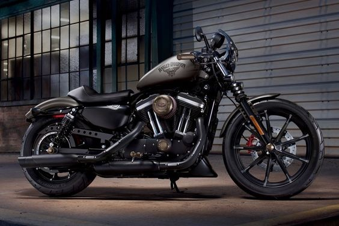
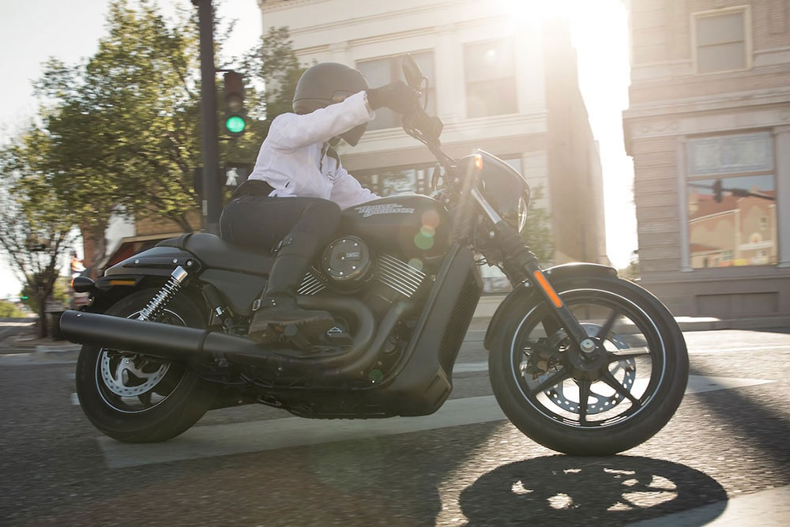

Iepazīsties ar jaunajiem 2020.gada H-D motocikliem.
Aplūko pilno sarakstu un izvēlies sev piemērotāko
2020.gada H-D.Tikai februāri! "Iron 883" atlaide 10%
IRON 883
Sajūti patiesās izjūtas, kuras sniedz divi riteņi, stūre un motors. Ja Tu meklē patiesi raupju, melnu un īpašu stilu bez nekā lieka, tad šis ir īstais motocikls. Kopš pirmais šī modeļa motocikls izripoja no rūpnīcas, Iron 883™ modelis ir visu laiku attīstījies. Precīzi pielāgota piekare. “Tuck and roll” sēdeklis. Melni lietie alumīnija diski ar iestrādātiem uzmanību piesaistošiem elementiem. Melnas virsmas no spārna līdz spārnam. Tev saņem visu, kas Tev nepieciešams. Un neko, kas nav nepieciešams.
Pavasaris klāt - Harley-Davidson prezentē jauno Street Rod
Jaunajam 2020. gada Harley-Davidson Street Rod modelim ir uzlabots dzinējs, parocīga jaudas kontrole un izteiksmīgs Harley-Davidson Dark Custom stils.
HARLEY-DAVIDSON STREET® 750.
Šis motocikls ir stāsts par pilsētas džungļu iekarošanu. Sākot ar to, ka tā Revolution X® motors ir aprīkots ar šķidruma dzesēšanu, ļoti pārliecinošām bremzēm ar ABS, līdz pat izveicīgajai šasijai un slēgtajiem priekšējiem amortizatoriem, Harley-Davidson Street® 750 ir radīts pilsētas ielām. Jaunā emblēma uz bākas un iespējamais divu toņu krāsojums lieliski papildina sudrabotās motora ribas un diska malas zīmīgo līniju. Patiesie prieki sākas brīdī, kad luksoforā iedegas zaļais!
Par mums
Mūsu salonā plašā klāstā piedāvājam:
- jaunākos "Harley-Davidson" motociklu modeļus
- oriģinālās motociklu detaļas un kopšanas līdzekļus
- jaunākās "Harley-Davidson" apģērbu un aksesuāru kolekcijas.